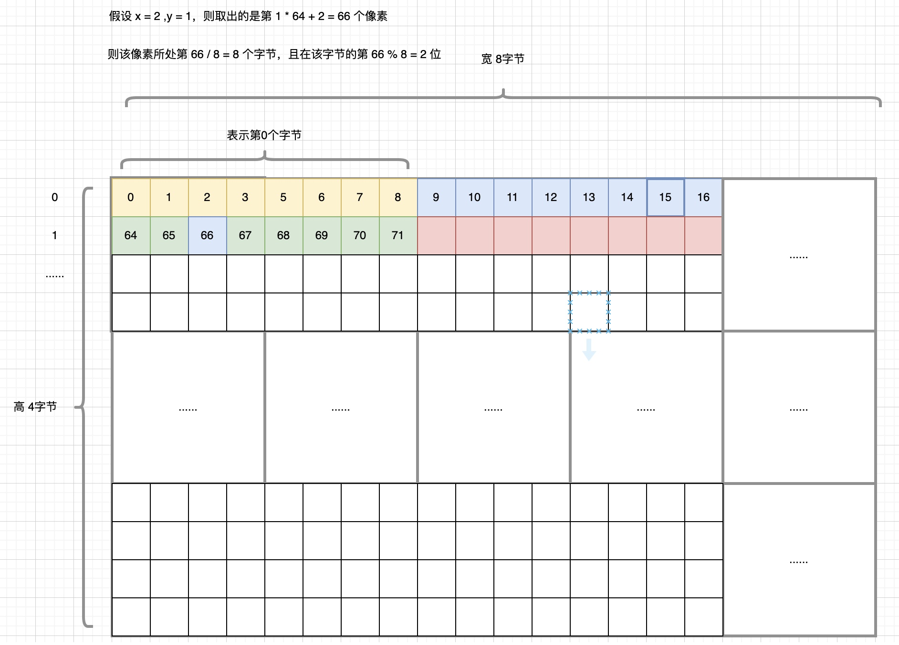
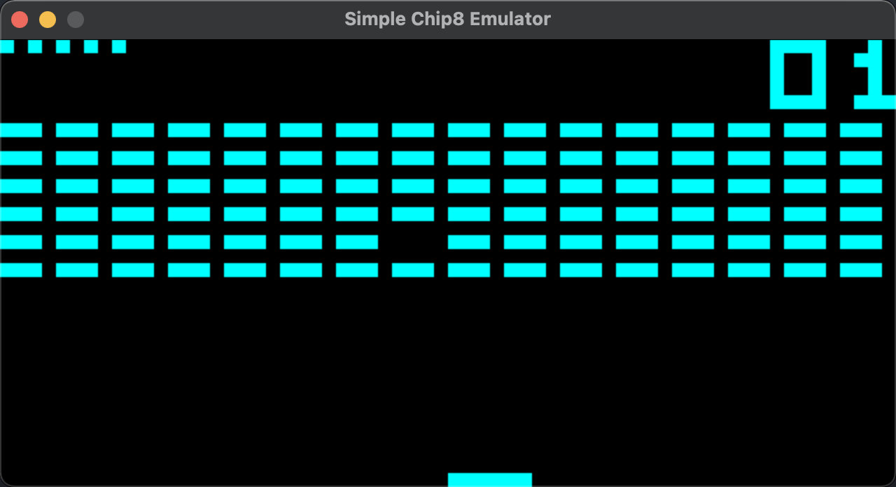
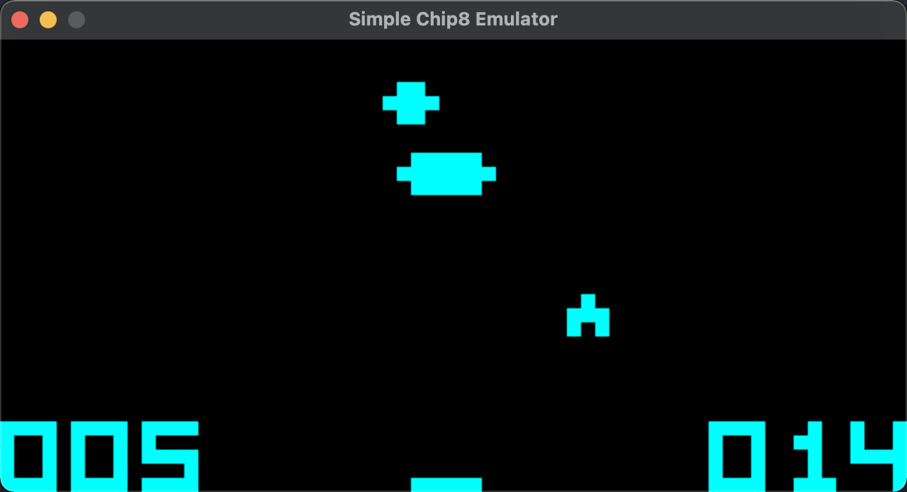
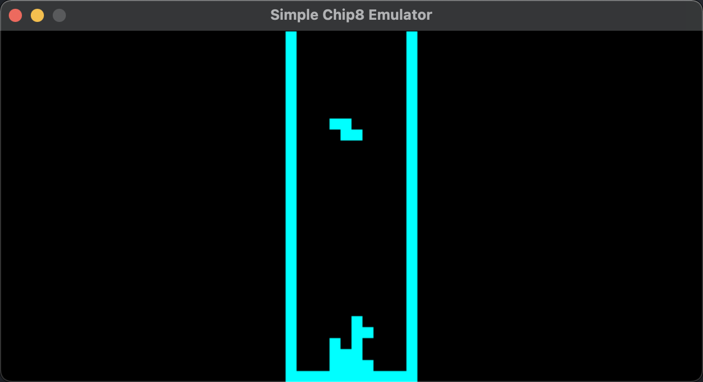

Golang实现Chip8模拟器
CHIP-8是由 Joseph Weisbecker 编写的解释型语言，使用该语言编写的程序可以在 CHIP-8 虚拟机上运行，因此可以运行一些简单的游戏。本文使用Go语言实现一个简单的CHIP8模拟器，just for fun
前言
博客已经有1年多没有更新了，期间也换了一个好看点的主题，但也没有继续写的动力（太懒了😂）。不过今天开始继续写博客，目前本人已经转Go，因此后续可能会发布一些有关Go的文章
为什么要自己实现一个模拟器？其实一开始是出于好玩，而且之前也学过计算机组成原理、操作系统和编译原理这三门课程，自己也实现过一个基于栈式虚拟机的小型编译器，后来萌生了一个写模拟器的想法。
本人之前打算实现一个简单的NES模拟器，但是由于NES模拟器PPU那块过于复杂，涉及到各种Mirroring和内存映射各种骚操作，因此在实现了CPU和其他一些模块后就放弃了😓。既然难的不行，那么就实现一个简单的CHIP8模拟器吧。
基础知识
在介绍CHIP8模拟器实现之前，让我们来了解下关于CHIP8的知识，更详细的可以从维基百科上查看: https://en.wikipedia.org/wiki/CHIP-8
CPU
对于CHIP8，CPU中应该包含必须的一些基础寄存器，其中包括：
- 程序计数器
PC，保存下一条指令的地址，16bit - 地址寄存器
I，涉及内存操作，12bit - 栈指针寄存器
SP，用于在函数调用时保存返回地址，8bit - 数据寄存器
V，共有16个，分别命名为V0~VF。其中VF表示的是 进位标志
除此之外，CHIP8还有两个计时器，分别为 DelayTimer 和 SoundTimer。由于这两个计时器在实现过程中可以忽略，因此这里不对两者作过多描述。
操作码
CHIP8一共有35个操作码，每个操作码大端存储且占用2个字节，每一个操作码可以用16进制表示，即得到下面的操作码表，该表改自维基百科
| 操作码 | 伪代码 | 解释 |
|---|---|---|
| 0NNN | 目前对于大部分ROMs不使用 | |
| 00E0 | display_clear() |
清屏 |
| 00EE | return |
从子程序中返回 |
| 1NNN | goto NNN |
无条件跳转到地址 0xNNN |
| 2NNN | *(0xNNN)() |
在地址 0xNNN 处调用子程序 |
| 3XNN | if (Vx == NN) |
如果 Vx 等于 0xNN 则跳过下一条指令 |
| 4XNN | if (Vx != NN) |
如果 Vx 不等于 0xNN 则跳过下一条指令 |
| 5XY0 | if (Vx == Vy) |
如果 Vx 等于 Vy 则跳过下一条指令 |
| 6XNN | Vx = NN |
设置 Vx 为 0xNN |
| 7XNN | Vx += NN |
加 0xNN |
| 8XY0 | Vx = Vy |
赋值 Vy |
| 8XY1 | Vx |= Vy |
位或 Vy |
| 8XY2 | Vx &= Vy |
位与 Vy |
| 8XY3 | Vx ^= Vy |
位异或 Vy |
| 8XY4 | Vx += Vy |
加 Vy |
| 8XY5 | Vx -= Vy |
减 Vy |
| 8XY6 | Vx >>= 1 |
Vx 右移一位 |
| 8XY7 | Vx = Vy - Vx |
Vy 减 Vx |
| 8XYE | Vx <<= 1 |
Vx 左移一位 |
| 9XY0 | if (Vx != Vy) |
如果 Vx 不等于 Vy 则跳过下一条指令 |
| ANNN | I = NNN |
设置地址寄存器 I |
| BNNN | PC = V0 + NNN |
设置 PC |
| CXNN | Vx = rand() & NN |
设置 Vx 为 [0,255] 的整数随机数 |
| DXYN | draw(Vx, Vy, N) |
在位置 (Vx,Vy) 绘制一个宽和高分别为8、N像素的精灵 |
| EX9E | if (key() == Vx) |
如果存储在Vx寄存器的键被按下，则跳过下一条指令 |
| EXA1 | if (key() != Vx) |
如果存储在Vx寄存器的键未被按下，则跳过下一条指令 |
| FX07 | Vx = get_delay() |
设置 Vx 为延迟计时器的值 |
| FX0A | Vx = get_key() |
阻塞所有指令操作并等待，直到一个键被按下并存储到 Vx 中 |
| FX15 | delay_timer(Vx) |
设置延迟计时器 |
| FX18 | sound_timer(Vx) |
设置声音计时器 |
| FX1E | I += Vx |
设置地址寄存器 I |
| FX29 | I = sprite_addr[Vx] |
设置地址寄存器 I 为某个字体精灵的起始地址 |
| FX33 | set_BCD(Vx) |
将 Vx 按照BCD形式存储到连续内存中 |
| FX55 | reg_dump(Vx, &I) |
从 I 地址开始依次写入 V0-Vx |
| FX65 | reg_load(Vx, &I) |
从 I 地址依次读取值到 V0-Vx |
内存
CHIP8总共只有4K的内存大小，从下面的内存布局中可以看出，CHIP8解释器本身需要占用 512 字节。
因此对于大部分的ROM加载时一般都是加载到起始地址 0x200 处。
- 0x000-0x04F 存储字体数据
- 0xEA0-0xEFF 保留用于调用堆栈、内部使用和其他变量
- 0xF00-0xFFF 存储用于显示的64*32像素，总共 256 字节
1 | |
显示
CHIP8显示屏宽高为 64x32，每个字节8bit，由于 CHIP8 只有黑白两色，因此可以用1bit表示一个像素，这样可以节省空间。
用于保存显示屏256字节数据位于内存空间 0xF00-0xFFF 处。
CHIP8绘制屏幕使用位运算将发生改变的像素位翻转。
输入
CHIP8键盘使用16个十六进制的按键 0-F，比如下面的这个布局
1 | |
在本文实现的Go代码使用了SDL2库，因此在处理按键输入时可以将实际键盘上的按键映射到CHIP8键。比如下面这个布局
1 | |
Golang实现
前面只是简单的介绍了关于实现CHIP8模拟器的一些基本准则，下面用代码来讲解如何实现CHIP8模拟器
完整代码位于 Github： https://github.com/josexy/gochip8
项目代码结构如下
1 | |
我在实现CHIP8时采用模块化设计，这样的好处是易于管理和定位错误。下面我将从整体到局部讲解各个模块是如何设计的。
main.go
首先让我们来看下main.go中的main函数是怎样的：
1 | |
可以看到，我将主要功能实现放在了chip8包下的 emulator.go 文件中。运行一下：
1 | |
emulator.go
CHIP8模拟器包含以下几个模块CPU、内存、显示屏、处理键盘输入、加载ROM文件。因此我们可以定义这样的一个结构体
1 | |
模拟器的初始化工作由 NewEmulator() 完成，这主要是对Emulator结构体各个字段进行初始化。需要注意的是，在初始化内存之后，需要将ROM文件数据和字体数据加载到对应的内存位置。
通过 Start() 方法开始运行：
1 | |
显示屏刷新频率一般是 60Hz，也就是需要延迟 1000/60 毫秒。当然如果你嫌运行慢的话也可以自行修改延迟时间。
CPU单步执行以及是否重绘窗口通过 clock() 方法，每当CPU单步执行，然后根据情况判断是否需要重新绘制显示屏。
1 | |
screen.go
该模块主要是创建模拟器的窗口和绘制精灵对象，由于显示屏数据保存在内存 0xF00-0xFFF，因此我们在更新时需要通过位运算来翻转某个像素。
1 | |
该库主要使用SDL2来渲染窗口，关于重绘部分可以查看完整的代码，这部分比较简单
下面来看一下获取某个像素和翻转像素方法，这涉及到位运算
1 | |
由于CHIP8模拟器的宽为8字节（64像素），高为4字节（32像素），在内存区域 0xF00-0xFFF 是线性存储的，因此对于每个字节，给定一个 pixel=screen(x,y) 像素，假设 x=2,y=1（需要注意的是这里所指的xy并非数学上xy坐标轴，而是按照行列来计算的且从零开始，即行y，列x），则取出的是第 1*64+2=66 个像素，那么该像素位于第 66/8=8 个字节，第 66%8=2 个位置
如果还是无法理解上面什么意思，那么可以从下面这张图来理解

mem.go
该模块主要模拟CHIP8的内存，在Go语言中使用切片(Slice)来表示这片大小为4096字节的区域
这个模块比较简单，大家可以自行查看源码。不过有一点需要注意的是CHIP8采用大端存储，因此从内存读取两个字节的操作码时要稍加注意，第一个字节是高位，第二个字节是低位
1 | |
rom.go
在初始化内存之后，除了将字体数据加载到内存，还需要将ROM游戏数据加载到内存 0x200 起始处，下面这段代码很easy
1 | |
keyboard.go
用于处理按键输入的 keyboard.go 模块主要是将CHIP8按键和用户自定义的按键布局映射起来。
1 | |
默认按键映射表如下
1 | |
cpu.go
该模块的主要功能就是模拟CPU单步执行，不过这些执行的指令都是规定好的，我们只需要按照规范去模拟每一个指令即可，对于CHIP8来说不必想得太难
我们首先来看下CPU结构体是如何描述的
1 | |
CPU单步执行方法是 Step()，该方法代码较长，完整的代码可以在GitHub查看，这里我说下需要注意的点。
首先是大致的执行逻辑
1 | |
绘制精灵主要实现如下
1 | |
-
由于CPU在单步执行的过程中可能接收按键输入，此时我们需要等待某一个键被按下。在此过程中CPU必须被挂起，直到按键被按下才可以继续执行指令。
-
调用 subroutine 时，需要将PC压入栈，用于后续返回 subroutine
-
在进行数值运算时需要注意改变 VF 进位标志
-
对于操作码 FX29，由于每个字体占用5个字节且位于内存区域 0x00-0x4F 中，且 Vx 保存的是字体的索引(0-F)，因此
Vx*0x5表示的是对应字体的起始内存地址 -
对于操作码 DXYN，在起始像素点(x,y)绘制一个宽8像素，高n像素的精灵
1 | |
运行结果



完整的代码实现可以在 GitHub 上找到，可以自行下载并运行（需要提前安装SDL2库）
好了，本文也就到此结束～
参考
本博客所有文章除特别声明外，均采用 CC BY-SA 4.0 协议 ，转载请注明出处！